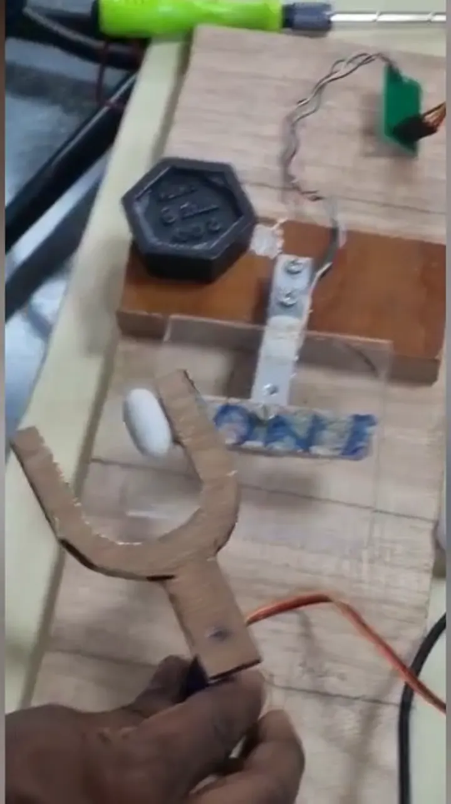

Hardware & Automation
Automatic Cocoon Sorting Machine
Low-cost prototype that sorts male and female silkworm cocoons by weight at 600 cocoons per hour.
- Arduino
- Weight sensing
- Mechanical design
- Automation
01Project overview
A low-cost machine that separates male and female cocoons by weight, aimed at improving efficiency in silk production.
Objective
Automate a manual sorting step in silk production with an affordable machine.
My contribution
- Designed and built the sorting prototype.
02Validation and results
- Sorting rate of 600 cocoons per hour.
03Gallery


